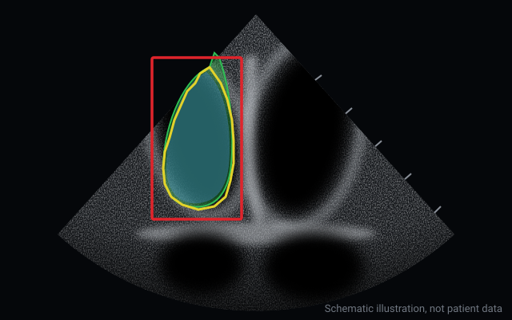
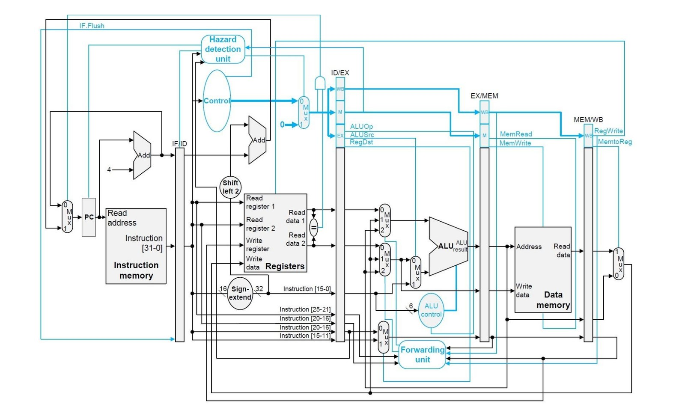

Thesis: adversarial robustness of robot object detectors
Printed patches raised the share of images with 50+ detections from 8.0% to 92.2%. Tested in simulation, on a Nova Carter robot and on a Jetson AGX Orin. 10/10, Best Senior Design Project.
I'm currently doing the MSc Computing (AI and ML) at Imperial College London.
Before that I studied Electrical and Computer Engineering at the University of Cyprus, where I ranked 2nd/39 in Computer Engineering and my thesis on adversarial attacks against robot object detectors received 10/10 and the Best Senior Design Project award.
Printed patches raised the share of images with 50+ detections from 8.0% to 92.2%. Tested in simulation, on a Nova Carter robot and on a Jetson AGX Orin. 10/10, Best Senior Design Project.

First-author paper at IEEE COINS 2026. YOLOv8n mAP@0.50 fell from 80.6% to 49.2%, while Jetson AGX Orin latency and power looked normal in 44 of 45 cases.

A left-ventricle model transferred to the right ventricle, then used to prompt a fine-tuned MedSAM2. Mean Dice rose from 0.8463 to 0.8918 on 41 locked cases.
Can GPT-4o mini replace human step labels for process rewards? Not at this scale: on GSM8K, human labels reached 94.5% against a 91% baseline, and GPT-4o mini 90.5%.
A printable patch that hides the person holding it from YOLOv8, run as a live demo at Researchers' Night 2025.

Single-cycle, multi-cycle and pipelined simulators in C++ with hazard detection and forwarding. Awarded 10/10.
Parsed ISCAS benchmark circuits into graphs, computed SCOAP testability features, and compared a KNN baseline with a graph convolutional network for predicting how hard each node's faults are to detect. Built with a teammate for ECE407 CAD for VLSI. Code
Right-ventricle segmentation in echocardiography: transfer learning with my supervisor, then a fine-tuned MedSAM2 prompted by the transferred model, raising mean Dice from 0.8463 to 0.8918.
Adversarial patch attacks and defences for edge object detectors on mobile robots. First author of RAPTOR (IEEE COINS 2026).
Leader-follower navigation with two Jetson-powered Segway Nova Carter robots using ROS 2.
Helped teach Python and introductory machine learning to teenage students, guiding them through building and training an image classifier in PyTorch.
Ethical-hacking assessments and EU compliance exercises.
Traffic analytics with YOLOv8s detection and tracking, plus a stacked-GRU flow forecaster (0.041 normalised validation MAE).
Military service.
Safe Bulkers Scholarship, one of 2 postgraduate recipients for 2026–27.
GPA 8.46/10, ranked 2nd/39 in Computer Engineering and 4th/83 in the ECE department. Thesis 10/10: Adversarial Robustness of Edge-Deployed Object Detectors in Mobile Robotics.
Robustness Assessment of Patch Transfer and Operational Risk in Edge Object Detectors for Mobile Robots. Presented in Bologna, September 2026.
One of 2 postgraduate recipients.
Best Computer Engineering thesis in the department.
Awarded in 2023–24, 2024–25 and 2025–26.
Email is the fastest way to reach me: mavroudi.lefkios03@gmail.com